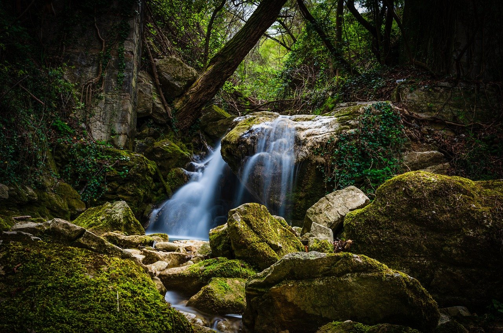
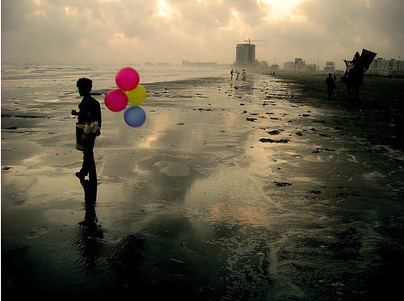

<!-- 1) გაირეთ sololearn'ი Links'ის ჩათვლით -->
<!-- Done -->
<!-- 2) აირჩიეთ 10 ფოტო (ნებისმიერი) და გამოიტანეთ საიტზე -->
 
 
 
 
 
 
 
 
 
 
<!-- 4) შექმენით ფოტო რომელზეც დაჭერის შემდეგ გადაგიყვანთ სხვა საიტზე -->
 <a href="https://www.youtube.com/"></a>
<!-- 5) კომენტარებით ახსენით რა არის child და parent  -->
<!-- Child არის თაგი რომელიც ნებისმიერ თაგს შიგნით არის -->
<!-- Parent არის თაგი რომელიც ინახავს Child თაგებს -->